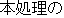
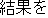
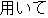
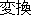
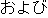
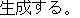
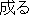
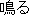
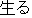

|
|
|
|
|
|||||||||||||||||||||
In order to get the translation quality applicable to actual documents, an automatic rewriting method of source texts has recently been proposed. Using a semantic attribute system of words, this method made it possible not only to define rewriting rules without undesirable side effects but also to rewrite the expressions as well which cannot be rewritten within the source language. This paper improves it to propose Generalized Rewriting Method of Internal Expressions. The new method interrupts the translation processes at any place and rewrite the internal expressions according to the conditions defined by rewriting rules.
First, previously defined rewriting rules are expanded and re-classified. Second, it is shown that the rules are generally comprised of 7 fundamental functions. Based on this, how to distribute their functions between the translation processes is shown. Finally, the proposed method is applied to the translation of two kinds of newspaper articles to study the amount of required rules and their actual use in the translation. The results show that the rules needed for newspaper translation can be obtained from the analysis of a relatively small number of articles (about several hundred sentences) for each particular field. It is also shown that the rule was applied at least once, on average, in the translation of two sentences and the overall translation success rate is improved by 20%.
In the last ten years or so, many machine translation systems, especially for the translation between Japanese and English, have been developed in Japan (Ikehara et al. 1987, 1996, Rimon et al. 1991, Nagao 1996). English to Japanese translation systems have basically achieved the translation qua1ity required for actual use. On the contrary, the quality of Japanese to English translation is not yet satisfactory. One of the major reasons for this asymmetry is considered to be the differences in the linguistic expression frameworks of Japanese and English. The rigid sentence patterns of English are relatively independent of their contents. Such patterns do not exist in Japanese and the structure of a Japanese expression is heavily dependent on its content. Therefore, it is difficult accurately to analyze Japanese expressions using only syntactic knowledge.
The second reason is the differences between the culture and historical circumstances of Japan and the West. Natural language is not only a means of communications but also a means of thinking. The characteristic of a language mirrors that of the culture. Differences in how to think lead to differences between the languages. Japan imported much European culture and many new concepts in the Meiji era. This is considered as one of the reasons of asymmetry of the translations.
There are two ways how to improve the machine trans1ation quality for actual documents. The first is to change the system, tuning the translation functions to the characteristics of the expressions to be translated. The second is to change the expressions in soarce texts adjusting to the function of the translation system.
Example based Translation (Nagao 1984, Sato 1992, Furuse & Iida 1992) and Knowledge based Translation (Takeda 1989, Nirenburg et al. 1992, 1993) can be classified as examples of the first approach. Aiming to overcome the limit of the principle of Compositional Semantics, Example based Translation finds the expressions in a parallel corpus that correspond to those of the source text and replace them with those of the target language. Unfortunately, it is difficult to prepare an adequate parallel corpus that covers a sufficient number of expressions. On the other hand, Knowledge based Translation requires a huge amount of knowledge such as common sense and world knowledge. It is not easy to collect and collate sufficient information.
Controlled Language can be classified as examples of the second approach. It will be separated into Restricted Writing of the Source Texts (Nagao 1985, Yoshida 1985) and Pre-editing ofthe Source Texts (Shirai et al. 1993, 1995). Restricted Writing of the Source Texts has not been accepted by users in Japan because it is applied to the step of writing original texts so as to restrict the author's way of thinking. On the contrary, Pre-editing of Source Text has been accepted widely because the editing method can be acquired by confirming the translation result after pre-editing. However, automatic pre-editing is needed to reduce the large amount of human labor required for pre-editing.
In the pre-editing process, the judgement as to whether an expression should be rewritten or not depends on its context. Disregarding context when rewriting expressions, degrades translation quality to an unacceptatb1e level. Thus, it has been difficult to realize automatic pre-editing without undesirable side effects.
In order to solve this problem, (Shirai et al. 1993, 1995) showed that the semantic attribute system (Ikehara et al. 1997) makes it possible to define rewriting rules with no undesirable side effects which allows the automatic rewriting of source texts to be realized. They also showed that rewriting into a pseudo source language, which is impossible with human pre-editing, can be undertaken. Based on this study, they developed an Automatic Rewriting Method and experimentally confirmed that the improvement of translation quality was about 20%.
The proposed system allows the source texts to be rewritten not before their input but after they are syntactically analyzed. Extending the rewriting rules to be applied at any stage of machine translation may also be helpful in improving the quality of source text analysis. Achieving this extension requires classification of the fundamental functions for rewriting such that the rewriting rule definitions are independent of the translation processes. Accordingly, in tins paper, we will propose An Automatic Rewriting Method for Internal Expression for Japanese to English machine translation. This paper analyses the roughly 900 rewriting rules that have been collected up to now to show that most rewriting rules can be represented as various combinations of 7 fundamental functions; the rewriting process can be easily constructed independent from the rewriting rules.
This chapter will summarize the framework of the automatic rewriting method that has been proposed (Shirai et al. 1995).
The most important problem in the automatic rewriting of the source text will be how to avoid undesirable side effects. In manual rewriting, only the expressions which can be rewritten without changing the meaning are rewritten so there is no need to worry about undesirable side effects. Automatic rewriting, however, applies registered rewriting rules without regard to context, so mistakes are possible.The more rewriting rules there are, the more undesirable side effects there will be. The overall translation quality will be decreased. In order to resolve this problem, the method considers the following two points.
| 1) | In addition to individual words and syntactic attributes, semantic attributes (Ikehara et al. 1993, 1997) should also be used to define the conditions as to whether the rewriting rule should be applied or not. Here, as for granularity of semantic attributes, note that the semantic attribute system needs to be comprised of 2,000 or more attributes. | ||
| 2) | Rewriting rules should be applied after syntactic analysis when sufficient information has been obtained to judge whether the application conditions of rules are satisfied or not. |
Fig.1 shows an example of rewriting. The rewriting rules are represented by tree structures. The major conditions needed for expressions to be rewritten are as follows;
| 1) | "Norimono" ("vehicle": defined by semantic attribute) needs to have a case relation with "Noru" ("ride": defined by a word face). | ||
| 2) | "Noru" needs to have a conjunctive relation with "Iku" ("go": defined by a word face). |
|
Thus, this rule is applied to the following sentence as shown in Fig. 2. In this example, the expression "ni notte iku" will be rewritten into "by".
| |||||||||||||||||||||||||||||||||||||||||||||||||||||||||||||||||||||||||||||||||||||||||||||
However, if we carefully look at the rule shown in Fig.1, we will find as well the following two conditions.
| 3) | "Iku" may have any number of case elements. | ||
| 4) | But, "Noru" must have only one case element: "Norimono". |
Thus, the following sentence in Fig. 3 will not be rewritten althoght it has the same expression "ni notte" as the Fig. 2.
| ||||||||||||||||||||||||||||||||||||||||||||||||||||||||||||||||
The expressions to be rewritten are classified as follows;
| 1) | The expressions winch have no equivalent in the target language with the same meaning. These expressions are rewritten into translatable expressions according to the author's intent. | ||
| 2) | The expressions that can not be translated because of cultural differences. | ||
| 3) | The expressions which could not correctly be translated because of the existing translation functions are insufficient. |
From these observations, the expressions to be rewritten seem to be virtually identical to those requiring pre-editing, but they are not the same. The proposed method has another useful ability. In pre-editing, if there is no expression that has the same meaning as the original expression, rewriting fails. However, in the Automatic Rewriting Method, when there is an expression in the target language which have the same meaning as the original expression, it can be directly be rewritten as that expression.
Under these considerations, (Shirai et al. 1995) have proposed 6 kinds of rewriting Japanese expressions.
Previously mentioned Automatic Rewriting Method may create undesirable side effects when two or more rewriting rules are applied to the same sentence so only one rule was applied to one sentence. If more than one rules are needed to be applied to one sentence, it was necessary to synthesize those rules to make a new rule.
In this paper, we functionally classify rewriting rules so as to be able to apply them to the same sentence. We also extend the application target of rewriting rules to the error recovery after source text analysis and to the extraction of other complex expressions.
(1) Overlapped Applications of Rewriting Rules
First let us consider the following sentence. Two rewriting rules will be applied to this sentence as follows.
| Reading: | hon-shori-no | kekka-wo | mochiite | henkan | oyobi | seisei-suru | |||||||
| Example: |  |  |  |  |  |  |
|||||||
| Meaning: | Using the results of this process, it transforms and generates. | ||||||||||||
| 1) | "Wo mochiite" is extracted as an Independent Phrase Expression and is rewritten into the expression corresponding to the English words "based on". | ||
| 2) | The expression "henkan oyobi seisei-suru" ("transformation and generate") is a degenerate expression composed of two verbs. The first verb "henhan-suru" is degenerated to the noun "henkan". This expression is then rewritten as "henkan-suru oyobi seisei-suru" ("transform and generate") supplementing the conjugation "-suru". |
The two phrases "wo mochiite" (use) and "seisei-suru" (generate) in the original sentence have a dependency re1ation (verb to a verb). However this relation changes into a case dependency after rewriting the first verb into the pseudo Japanese expression corresponding to English "based on". Therefore, the application condition of the rewriting rule 1) including the phrase corresponding to "seisei-suru" and the target expression of rewriting rule 1) and 2) partially overlap. However the application of the rewriting rules that have different characteristics will not generate side effects. Separation of rewriting rules into small steps improves the generality of rewriting rules.
(2) Application to the Result of Source Text Analysis
Although, many rules are prepared for use in text analysis such as morphological and syntactic analysis, there are many exceptional expressions which can not be analyzed. In particular, there are many words and expressions whose behavior can not accurately be defined. Most of the failures in analysis are due to such words or expressions. This can be thought of as the major reason for the limitation of current analysis methods.
However, if we collect the expressions that could not be analyzed correctly, we find that there are some common characteristics among these expressions and the analysis errors can be extracted as expression patterns. Considering this, we propose to expand the method to find error patterns in the results of morphological analysis and syntactic analysis, and to replace them by correct patterns.
According to the previous discussion, rewriting rules are functionally classified considering the order of application. First, rewriting ru1es of error correction will be applied just after morphological analysis and syntactic analysis. The following 2 categories of rewriting rules will be followed by this.
| (a) | Rewriting within the Source Language | ||
| The expressions rendering machine translation impossible are rewritten within the Japanese language. Three types of expressions have been proposed: Degenerate Expressions, Removing Redundancy, and Syntactic Pe-arrangement. This rewriting outputs translatable Japanese sentences that are not always appropriate as Japanese expressions. | |||
| (b) | Rewriting into Pseudo Source Language | ||
| The expressions which can not be rewritten into a different Japanese expression are rewritten into pseudo Japanese expressions. Here the pseudo Japanese expressions are represented by symbols, the meanings of winch correspond to the target language. Three types of expressions have been proposed: Indipendent Phrase Expressions, Modal and Tense Expressions and Degenerate Conjunctive Expressions. Even in cases where rewriting within the Japanese text is possible, if the expression after rewriting resuits in ambiguity, rewriting into the pseudo source language should be undertaken using an awareness of the corresponding English. |
Here, let's consider the relation of these rewritings. The former can be thought as the rewriting to help the analysis of source expressions. The latter can be considered as rewriting to help the transfer into the target expression. Of the latter type, rewriting of "Independent Phrase Expression" aims at freezing the expressions which have rigid meaning. On the other hand, rewriting of "Modal and Tense Expression" and "Degenerated Conjunctive Expression" can be considered as the extraction of expressions which can not be translated based on the principle of compositional Semantics.
Consequenuy, we classify the rewriting rules into 4 groups and 14 categories. Details are shown below.
(1) Rewriting as Post Processing for Analysis
1) Correction of Morphological Analysis
Long strings of "kana" characters and composed words with suffixes offen cause errors in morphological analysis, The rewriting of these expressions is shown in the following two examples. The second example shows one of the errors that appear when suffix processing is strengthen for the analysis of comp1ex compound word. The patterns of these errors are registered in the rewriting rule dictionary and corrected by using them.
| Reading: < Error > Meaning: |
|
|||||||||||||||||||||
| Reading: < Correct > Meaning: |
|
|||||||||||||||||||||
| Reading: < Error > Meaning: |
|
|||||||||||||||||||||
| Reading: < Correct > Meaning: |
|
2) Removing Redundancy of Morphological Analysis
In morphological analysis, several interpretation candidates such as "

("naru": become)", "
("naru"; sound)", "
("naru"; grow)" are generated for the verb "" written by "kana" characters. This kind of ambiguity can not be resolved by just syntactic information so that it is left for semantic analysis. However, in the Rewriting of Internal Expression, some of these ambiguities can be resolved referring the meaning of adjacent words which is defined by the semantic attributes. This reduces the work of syntactic and semantic analysis. Experiments up to now have shown that the interpretation ambiguities caused by morphological analysis can be reduced from an average of 2.15 to 1.15 at every word.3) Correction of Dependency Analysis
In the following example, the noun phrase, "Noun + (nagara)" is literally interpreted as a noun phrase in morphological analysis. But it plays the role of a predicate in this sentence so dependency analysis can not be correctly performed. For such cases, the results of dependency analysis, as well as the syntactic interpretation of the phrase, are changed.
| kanojo-ha (she) | onna-nagara (even a woman) | yuukan-da (brave) | |||||||||||
| (case element) | (case element) | (predicate) | |||||||||||
case dependency |
case dependency |
||||||||||||
| kanojo-ha (she) | onna-da-ga (is a woman but) | yuukan-da (brave) | ||||||||||||
| (case element) | (predicate)  (particle) (particle) |
(predicate) | ||||||||||||
| case dependency |
 |
conjunctive dependency |
|
|||||||||||
4) Removing Redundancy of Dependency Analysis
As shown in the following example, rewriting is performed so as to reduce the number of dependent candidates.
| < Before rewriting > | ||||||||||||||||||||
|
||||||||||||||||||||
| < After rewriting > | ||||||||||||||||||||
(2) Rewriting within Source Language
5) Expansion of Degenerated Expression
Deleted word inflection and deleted expression in the parallel noun phrase are restored to their original expressions,
| Reading: < Before rewriting > Meanings: |
|
|||||||||||||
| Reading: < After rewriting > Meanings: |
|
6) Removing Redundant Expression
The expressions whose nuances are not translatable into English are rewritten into simpler expressions. In this example, a complex sentence is rewritten into a simple sentence with a parallel noun phrase.
| Reading: < Before rewriting > Meaning: |
|
||||||||||||||||||||||
| Reading: < After rewriting > Meanings: |
|
||||||||||||||||||||||
7) Syntactic Rearrangement
The sentence structures of special Japanese expressions that can not be directly translated are rewritten. The example sentence is composed of adverbial phrases and a verb. It has neither of a subject nor a object so that it is necessary to rewrite it into a sentence with a subject.
| Reading: < Before rewriting > Meaning: |
|
|||||||||||||||||||||
| Reading: < After rewriting > Meanings: |
|
8) Standardization of Honorific Exprssion
The Japanese language has many honorific expressions which cannot be translated into English. these expressions are rewritten into easily translatable Japanese expression.
| Reading: < Before rewriting > Meanings: |
|
||||||||||||||||||||
| Reading: < After rewriting > Meanings: |
|
||||||||||||||||||||
(3) Rewrite into Pseado Soource Language
9) Independent Phrase Expression Corresponding to Particle
As shown in Fig.1 of chapter 1, independent phrase expressions which correspond to an English particle are rewritten.
10) Adverbial Phrase Expression
If we translate literally clause expressions such as " (yuu-made-mo naru)" and " (ippan-teki ni ie-ba)" into English, clauses will be generated. However these expression take the role of adverbial phrase expressions such as "needless to say" and "generally speaking" in English. These are rewritten into pseudo Japanese phrase exprssions.
11)Adnominal Phrase Expresssion
Modification clauses such as " (inshou-ni nokoru)" and " (yorokobi-ni afureta)" are rewritten into word modifiers that mean "impressive" and "joyful" respectively.
12) Phrase Expression
This is similar to the above expressions except that variable words are included. For example, " (odoroi-ta koto-niha)" is rewritten to "to one's surprise" where the word "one's" changes depending on the context.
(4) Rewriting to Freeze Subjective Expressions
13) Conjunctive, Modal and Tense Expression
The expressions composed of conjugation, modality and tense are rewritten into symbols which have the same meaning in English.
| Reading: < Before rewriting > Meanings: |
|
|||||||||||||||||
| Reading: < After rewriting > Meanings: |
|
14) Modal and Tense Expression
Similarly to the above, the expressions composed of modality and tense are rewritten into some symbol which has the same meaning in English.
| Reading: < Before rewriting > Meanings: |
|
|||||||||||||||
| Reading: < After rewriting > Meanings: |
|
|||||||||||||||
Based on a translation experiment, we collected 940 rewriting rules. According to the above mentioned standards, they were classified into 14 categories and the fundamental functions needed to perform all rewriting rules ware studied. From this study, it was found that any rewriting function will to composed of 7 fundamental functions and that the conventional way of describing application conditions needs to be expanded.
Accordingly, in this chapter we propose a new way of defining the conditions for rewriting rule application and the construction of the rewriting process based on the structure of fundamental rewriting functions.
Generally speaking, a rewriting rule is composed of two parts: the description of conditions for applying the rule and the description of rule execution. The first part can be defined using either word face, syntactic attributes such as part of speech or semantic attributes. Yet, this part has problems shown below.
| 1) | It is necessary to strictly define rewriting rules in order to avoid undesirable side effects. Not only the target expression needs to be defined but also adjacent words or phrases. However, many fluctuations are possible when writing words such as "kanji" description, "kana" description and the description of word inflections. For example of fluctuations, a Japanese noun " (bara, rose)" is sometimes written as " (bara)" in katakana characters and " (bara)" in hiragana characters. A Japanese verb " (okonau, do)" is also written as " (okonau)". This reduces the ability to accurately handle actual expressions. | ||
| 2) | In order to define the expressions to be rewritten, two or more conditions need to be written in the condition part of the rewriting rules. However, these were not freely defined in the conventional method. Exceptional conditions were not also able to be written. | ||
| 3) | The usable attributes name was restricted and there were several forms to wrtite them in the conventional rules. |
In order to resolve the first problem, a standard description was created to transform fluctuations into standard forms before applying rewriting rules. For the second problem, the relations of "and" and "or" between the rule application conditions were made easy to define and exceptional conditions are also made easy to write. For the third problem, we determined the expanded attribute set and a general form for defining rewriting conditions.
According to the analysis of the 940 rewriting rules already prepared, most rules can be performed by the following 7 fundamental functions.
| 1) | Connection: | Replace two or more words by one word | |||
| 2) | Alteration: | Alter a word attribute or give a new attribute to a word | |||
| 3) | Deletion: | Delete a word or a phrase | |||
| 4) | Supplementation: | Insert a word or a phrase | |||
| 5) | Separation: | Separate a word into two or more words | |||
| 6) | Exchange: | Exchange the order of words or phrases | |||
| 7) | Assessment: | Assess the expression that satisfies the rewriting conditions |
Table 1 shows the relation between 7 fundamental functions and 940 rewriting rules.
|
| |||||||||||||||||||||||||||||||||||||||||||||||||||||||||||||||||||||||||||||||||||||||||||||||||||||||||||||||||||||||||||||||||||||||||||||||||||||||||||||||||||||||
| |||||||||||||||||||||||||||||||||||||||||||||||||||||||||||||||||||||||||||||||||||||||||||||||||||||||||||||||||||||||||||||||||||||||||||||||||||||||||||||||||||||||
| |||||||||||||||||||||||||||||||||||||||||||||||||||||||||||||||||||||||||||||||||||||||||||||||||||||||||||||||||||||||||||||||||||||||||||||||||||||||||||||||||||||||
In the previous section, we pointed out that rewriting can be performed by the 7 fundamental functions. Therefore, the rewriting execution program will be composed of 7 independent modules and a control program. According to the requirements defined in the rules, rewriting process can interrupt at any point of the translation processed. Fig.4 shows the correspondence between interrupting points and rewriting rules.
|
(1) Experiment parameters
In order to study the frequency with which rewriting rules were applied, the rewriting procedure was realized in the Japanese to English machine translation system ALT-J/E (Ikehara et al. 1987) and translation experiments were performed for two kinds of newspaper articles.
| 1) | General articles | ||
| 874 sentences: Japan Industrial News (from August to September, 1994) | |||
| 2) | Market News | ||
| 546 sentences: Telecom BIZ, Japan Industrial News Co. Ltd. July 1995) |
The rewriting rules resulting from several translation runs were collected to determine which rules were used and the frequency of rewriting rule application.
(2) Frequency Rewriting Rule Application
The frequencies with winch the rules were used are shown in Table 2. We can find the following from these results.
| 1) | The total number of rules applied to the general artic1es was 162 and they were applied a total of 463 times. The total number of rules applied to the market news was 43 and their total frequency was 337. The times of application for a sentence is 0.53 for the first case and 0.62 for the last case. | ||
| 2) | Rewriting rules related to Post-processing of Morphological Analysis and Independent Phrase Expressions are used most frequently. The rules related to syntactic analysis such as Correction of Dependency Analysis and Syntactic Rearrangement are also used frequently. | ||
| 3) | Compared to the general articles, the translation of the Market News involves fewer rules but they are used for frequently. This means that specific and rigid expressions are frequently used. |
In this experiment, it was shown that the success rate of the trarlslation was improved by 20% by the proposed method.
| Classification | Rewriting Rules | General Article | Market News | ||
| No. of R | F. of A. | No. of R | F. of A. | ||
| Rewriting as Post-Processing for Analysis | 32 | 66 | 9 | 107 | |
| 6 | 129 | 3 | 39 | ||
| 2 | 23 | 1 | 1 | ||
| 2 | 6 | 0 | 0 | ||
| Sub-total | 42 | 224 | 13 | 147 | |
| Rewriting within Source Language | 1 | 1 | 1 | 14 | |
| 5 | 5 | 1 | 14 | ||
| 13 | 28 | 4 | 22 | ||
| 0 | 0 | 0 | 0 | ||
| Sub-total | 19 | 34 | 6 | 50 | |
| Rewrite into Pseudo Source Language | 58 | 125 | 16 | 120 | |
| 25 | 32 | 8 | 20 | ||
| 7 | 9 | 0 | 0 | ||
| 0 | 0 | 0 | 0 | ||
| Sub-total | 90 | 166 | 24 | 140 | |
| Rewriting of Subjective Expressions | 1 | 1 | 0 | 0 | |
| 10 | 38 | 0 | 0 | ||
| Sub-total | 11 | 39 | 0 | 0 | |
| Total | 162 | 463 | 43 | 337 | |
(3) Rewriting Rules used most frequently
The ten most frequently applied rules are shown in Table 3. We found that the rules most frequently used for general articles differ from those used for market news, but most of the rules used in translating the two fields are the same even if their frequency of use differs.
| Rewriting Rules | General Article | Market News | Total | |
| 1 | reduce the ambiguities of continuative expression of verb | 84 | 15 | 99 |
| 2 | change the part of speech of "" at the head of a sentence into an adverb | 1 | 82 | 83 |
| 3 | change the dependent of adverbial particle " " " |
21 | 1 | 22 |
| 4 | change "" into "for the first time" | 2 | 16 | 12 |
| 5 | delete the numeral classifier "" from "", "" | 1 | 14 | 15 |
| 6 | change "" into "toward" | 1 | 12 | 13 |
| 7 | freeze "" to one word | 2 | 7 | 9 |
| 8 | change "" into "slightly" depending on the defined conditions | 1 | 6 | 7 |
| 9 | change "" into "beside" | 1 | 6 | 7 |
| 10 | delete the interpretation of a case particle for "" | 6 | 1 | 7 |
In order to study the trends in the number of rewriting rules and the total frequency of usage are shown in Fig.5. From this figure, the following observation can to made.
For both fields, the total number of rules used increases in proportion to the number of sentences but the number of rules used tends to saturate. This indicates that the proposed method is very feasible.
This paper extended the Automatic Rewriting Method of Source Text to create the Automatic Rewriting of Internal Expressions. In the new method, the rewriting process can interrupted the translation processes at any point to rewrite an internal expressions as necessary to achieve correct translations.
First, rewriting rules were extended and functionally classified for rewriting internal expressions, Based on this classification, it was shown that rewriting rules can be executed by 7 fundamental functions. Finally, this method was applied to the translation of two kinds of news paper articles to determine the number of rules needed and the total number that they were applied.
The results showed that rewriting rules are applied once, on average, at every two sentences and the improvement of translation quality was by 20%. It is very important to notice that the necessary rules can be collected from the analysis of relatively small numbers of sentences in the target field. In some cases, the study of several hundred sentences can find an adequate number of rewriting rules.
In order to develop this method into a fundamental part of a machine translation system, it is necessary to collect an sufficient number of rewriting rules. However, it is not easy for a novice to strictly define the rules needed for rewriting internal expressions so we are now developing a machine aided system for rewriting rule generation.


 (auxiliary verb)/
(auxiliary verb)/ //
// //
// (particle)//
(particle)//